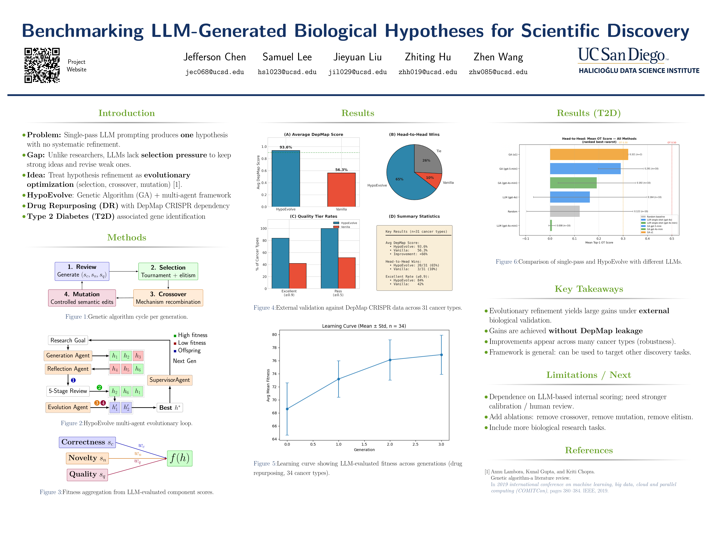
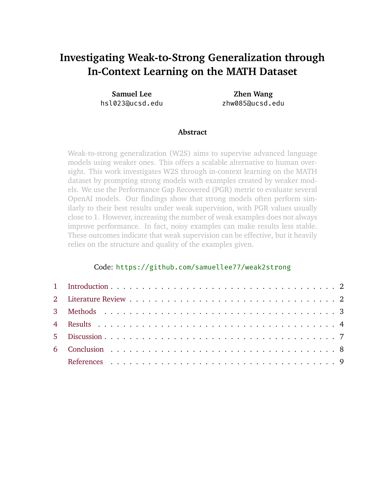
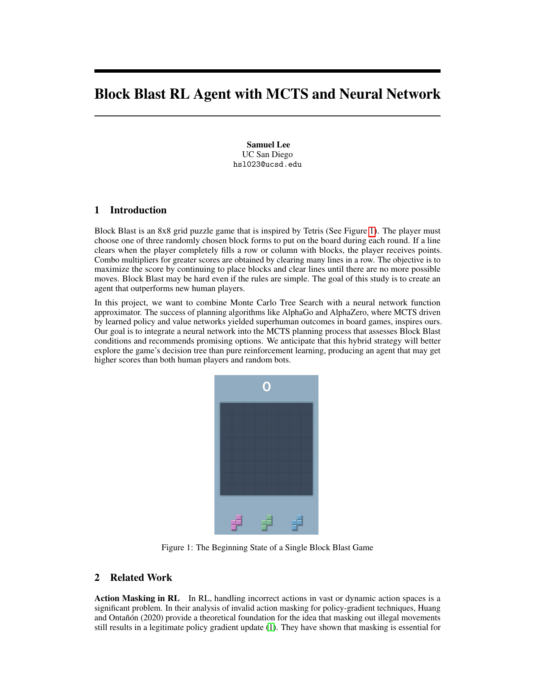
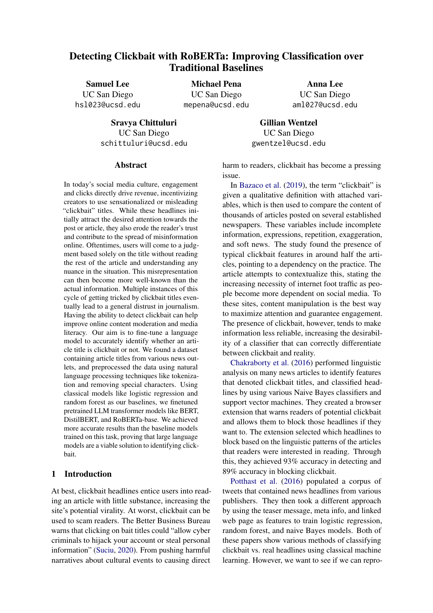
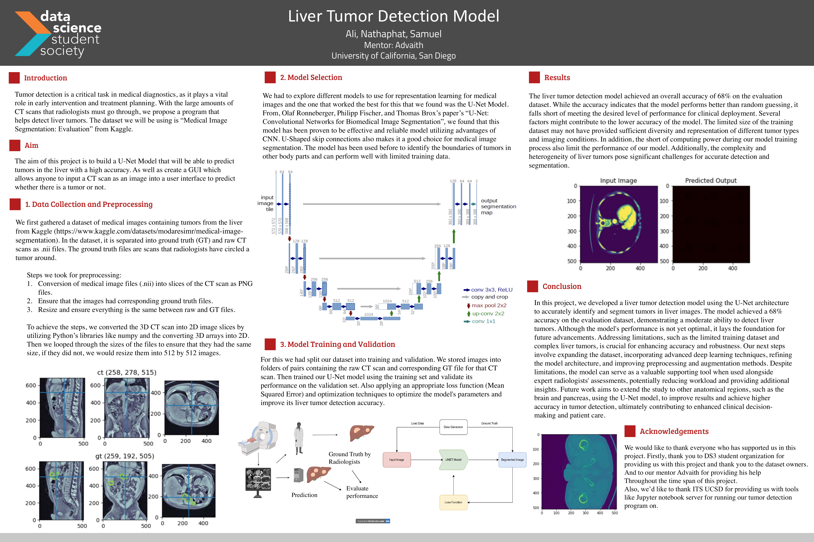

Portfolio
Research capstones, applied ML projects, and systems work spanning vision, language, and reinforcement learning.

HypoEvolve: Benchmarking LLM-Generated Biological Hypotheses
Senior capstone pairing a genetic algorithm with a multi-agent LLM loop to refine biological hypotheses for drug repurposing (DepMap CRISPR) and Type-2 Diabetes gene identification. Presented at the UCSD HDSI senior capstone showcase.

Weak-to-Strong: PGR Experiments on the MATH Dataset
Investigates weak-to-strong generalization via in-context learning; strong models recover most gold-prompt performance under weak supervision.

Forum Bot & Chat Bot with Azure OpenAI
Integrates OpenAI's language model into a Discourse auto-reply bot and a web chatbot using Microsoft Azure services.

Block Blast RL Agent (MCTS + Neural Network)
Combines Monte Carlo Tree Search with a CNN policy-value model; achieves ~4× higher scores than a random baseline.

Detecting Clickbait with RoBERTa
Fine-tuned transformer beats logistic regression / random-forest TF-IDF baselines on headline classification.

Liver Tumor Detection with U-Net
U-Net segmentation model for CT tumor detection; foundation for further accuracy improvements.

League of Legends Pro Game Analysis
Analyzes 2022 pro LoL data on team wins by side and champion picks/bans; finds a blue-side advantage.